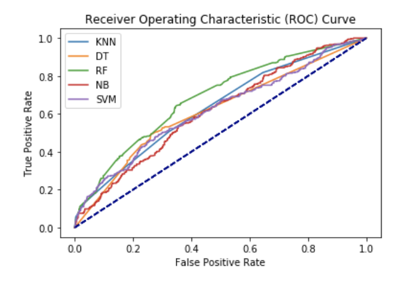
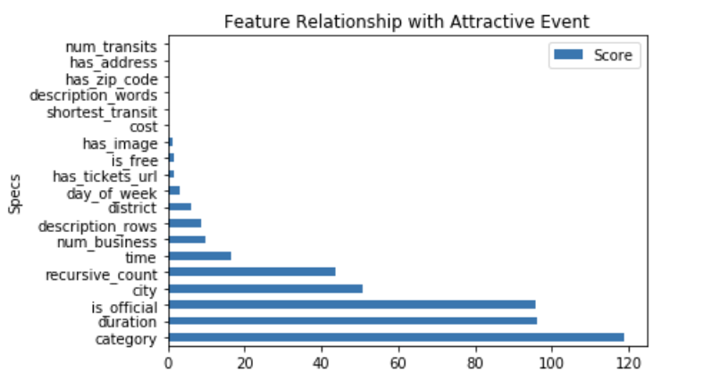
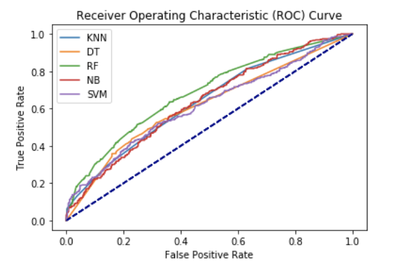
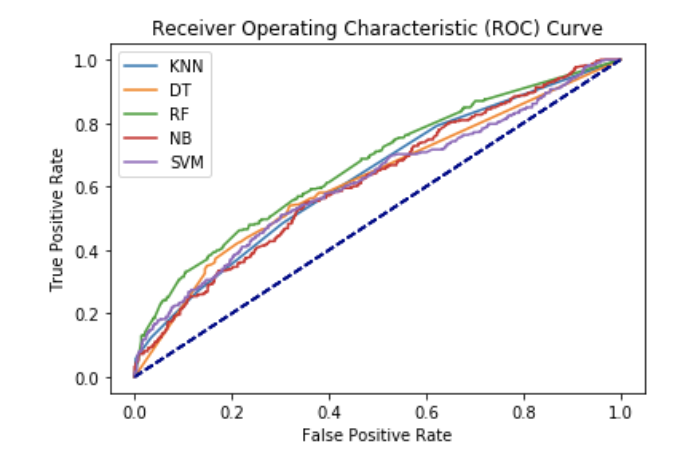

Predictive Analysis
Predict whether an event is attractive
Prediction with 19 Variables
- 
KNN: 0.709202 (0.022229)
DT: 0.707975 (0.024639)
RF: 0.727607 (0.027311)
NB: 0.727198 (0.020393)
SVM: 0.731084 (0.019080)
Feature Selection
Univariate Selection

Statistical tests can be used to select those features that have the strongest relationship with the output variable.
The scikit-learn library provides the SelectKBest class that can be used with a suite of different statistical tests to select a specific number of features.
The example below uses the chi-squared (chi²) statistical test for non-negative features to select 19 of the best features from the Dataset.
Prediction with 13 Variables
- 
KNN: 0.711656 (0.018854)
DT: 0.701022 (0.023133)
RF: 0.722495 (0.027346)
NB: 0.727198 (0.020474)
SVM: 0.734151 (0.016283)
Selected features:
'has_image',
'is_free',
'has_tickets_url',
'day_of_week',
'district',
'description_rows',
'num_business',
'time',
'recursive_count',
'city',
'is_official',
'duration',
'category'
Prediction with 10 Variables
- 
KNN: 0.709202 (0.022229)
DT: 0.707975 (0.024639)
RF: 0.727607 (0.027311)
NB: 0.727198 (0.020393)
SVM: 0.731084 (0.019080)
Selected features:
'day_of_week',
'district',
'description_rows',
'num_business',
'time',
'recursive_count',
'city',
'is_official',
'duration',
'category'
Prediction with 5 Variables
KNN: 0.716360 (0.023443)
DT: 0.749489 (0.023375)
RF: 0.746830 (0.023060)
NB: 0.727812 (0.020480)
SVM: 0.740695 (0.020425)
Selected features:
'recursive_count',
'city',
'is_official',
'duration',
'category'
Conclusion
Based on the above analysis, recursive_count, city, is_official, duration, category these five factors could achieve the highest prediction accuracy.